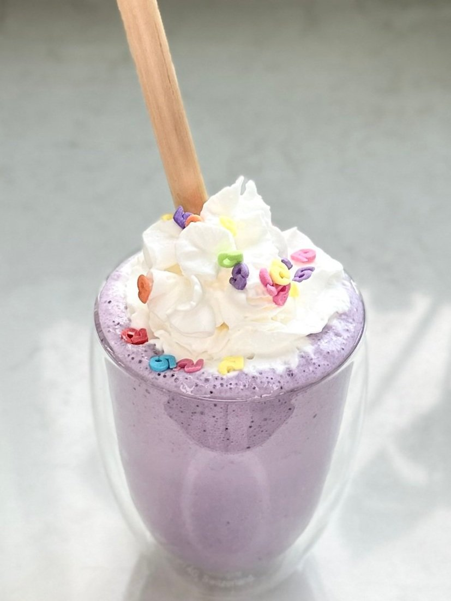

What are we making today, and what is it?
Today, we are making a grimace shake! We were to broke to afford the actual grimace shake when it came out at Mcdonald's, but hey at least now we
can make a home made rip off version! The grimace shake, also known as you know what I wont even start, anywhom, it was once a smoothie sold at Mcdonald's for
a limited time only, it tasted good I guess, I dont really remember how it tastes, how can anyone? I just know alot of memes were spawned, poor grimace, he just
wanted to celebrate his birthday, now that I think about it, why isnt his birthday celebrated every year? Damn it, it makes me mad with rage, I might go shoot up
my local Mickey D's!
What is needed, AKA INGREDIENTS!
- 3/4 of any milk, yes, even femboy milk, makes me wonder, how would that taste anyway? Don't actually use that or search it up
- 3 balls or scoops of any ice cream
- Handful of blueberries
- 1 tablespoon Grimace syrup *it could be vanilla syrup mixed with a berry syrup*
- Sugar sweetner as needed, to taste
- Whipped cream and sprnkles
Now its time to get to work, so lets get down to it.
- Step 1: Combine the milk, ice cream, blueberries, Grimace syrup (or 1 teaspoon of ube extract for a twist), and sugar sweetener according to your preference.
- Step 2: Blend everything in a blender until smooth and well-mixed.
- Step 3: Pour the creamy concoction into a cup.
- Step 4: Load it up with a generous dollop of whipped cream and sprinkle on some colorful sprinkles.
More recipes!